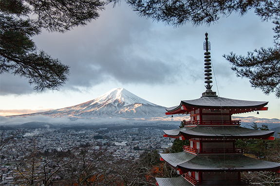
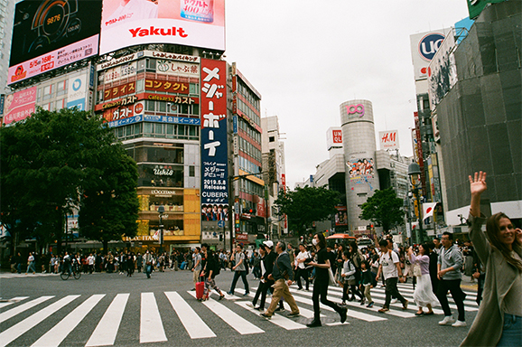
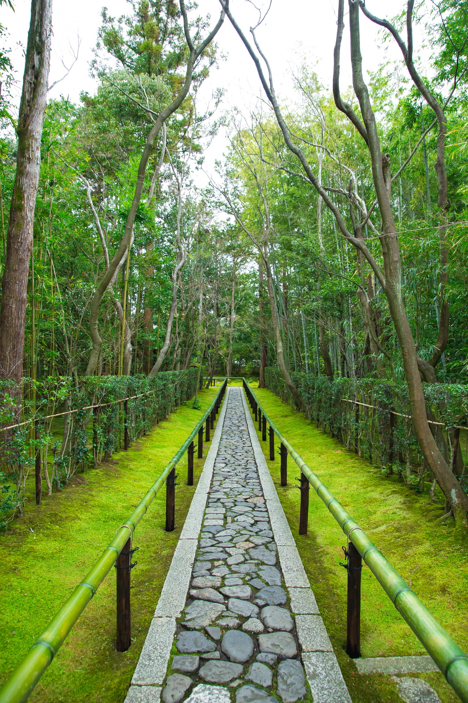
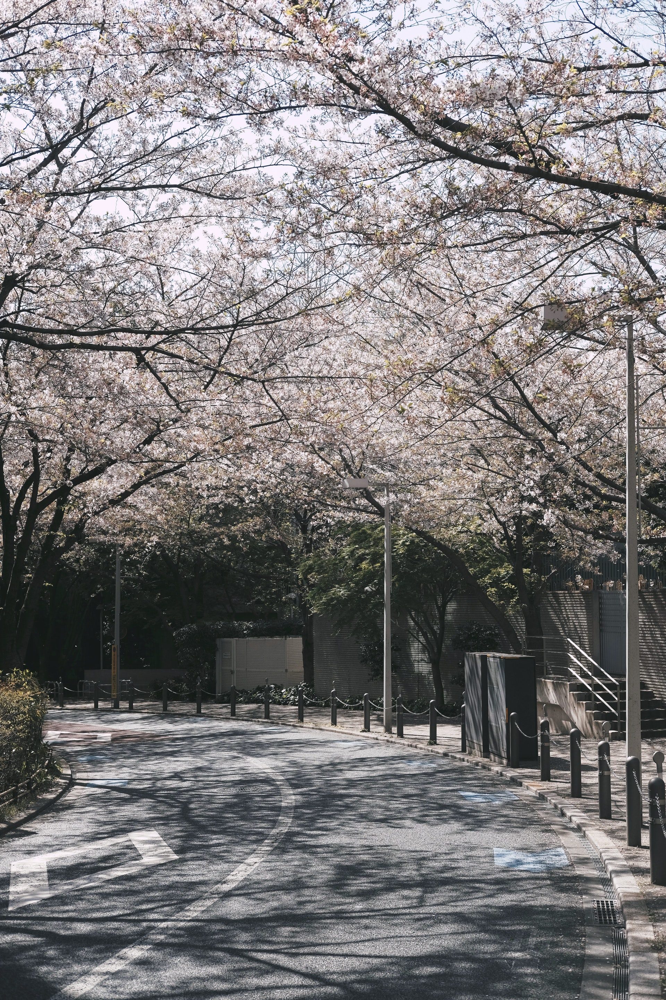

TravelJP
Tokyo
Gallery
Mount Fuji, Japanese Fuji-san, also spelled Fujisan, also called Fujiyama or Fuji no Yama, highest mountain in Japan. It rises to 12,388 feet (3,776 metres) near the Pacific Ocean coast in Yamanashi and Shizuoka ken (prefectures) of central Honshu, about 60 miles (100 km) west of the Tokyo-Yokohama metropolitan area. It is a volcano that has been dormant since its last eruption, in 1707, but is still generally classified as active by geologists. The mountain is the major feature of Fuji-Hakone-Izu National Park (1936), and it is at the centre of a UNESCO World Heritage site designated in 2013. The origin of the mountain’s name is uncertain. It first appears as Fuji no Yama in Hitachi no kuni fudoki (713 CE), an early government record.
Tokyo, formerly (until 1868) Edo, city and capital of Tokyo to (metropolis) and of Japan. It is located at the head of Tokyo Bay on the Pacific coast of central Honshu. It is the focus of the vast metropolitan area often called Greater Tokyo, the largest urban and industrial agglomeration in Japan. A brief treatment of Tokyo follows. For full treatment, see Tokyo-Yokohama metropolitan area. The site of Tokyo has been inhabited since ancient times; the small fishing village of Edo existed there for centuries. Edo’s development into a city did not occur until the Tokugawa period (1603–1867), when it became the capital of the Tokugawa shogunate. During this period, however, the imperial family remained in Kyōto, the ancient imperial capital.
Rumoured to be the busiest intersection in the world (and definitely in Japan), Shibuya Crossing is like a giant beating heart, sending people in all directions with every pulsing light change. Nowhere else says ‘Welcome to Tokyo’ better than this. Hundreds of people – and at peak times upwards of 3000 people – cross at a time, coming from all directions at once, yet still to dodging each other with a practised, nonchalant agility. Mag's Park, the rooftop of the Shibuya 109-2 department store, has the best views over the neighbourhood's famous scramble crossing. It's screened with plexiglass, so you can still get good photos, without having to worry about losing anything over the edge). The intersection is most impressive after dark on a Friday or Saturday night, when the crowds pouring out of the station are at their thickest and neon-lit by the signs above.
Attractions
Cool places to visit
-

- 
-

- 
-